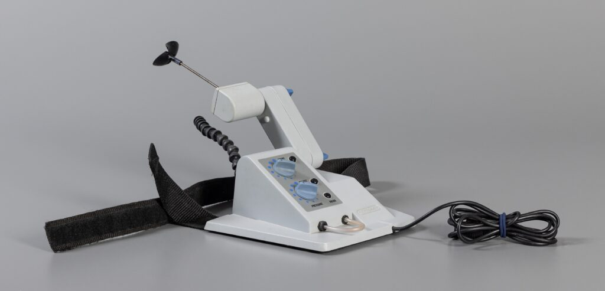
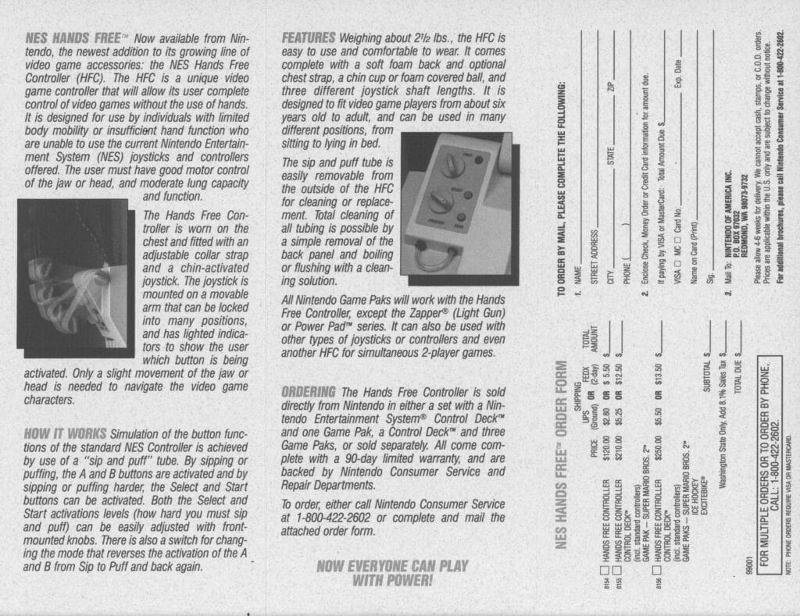
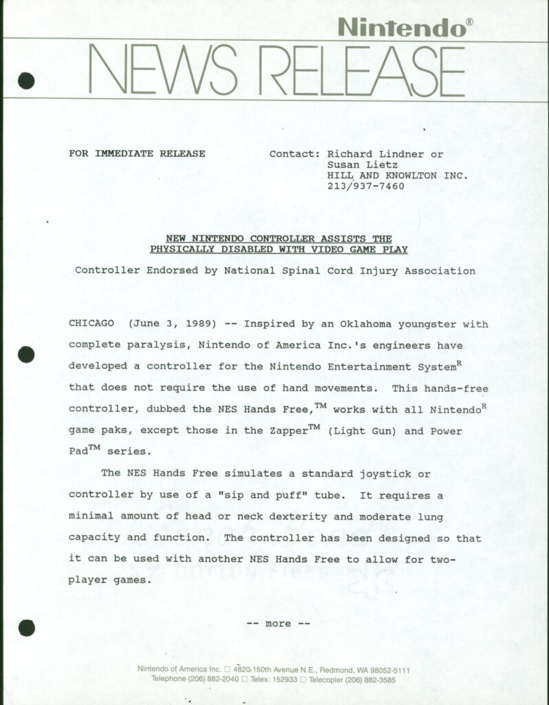

Nintendo Hands Free Controller
The first accessibility controller produced by a major gaming corporation, operated by chin and breath — 29 years ahead of its time.

Overview
The Nintendo Hands Free Controller was an accessibility peripheral for the Nintendo Entertainment System, released by Nintendo of America in the spring of 1989. Designed specifically for players with quadriplegia and other severe physical disabilities, it enabled gameplay entirely without the use of hands. The controller strapped onto the player's chest with shoulder harnesses and featured a chin-operated joystick for directional movement alongside a sip-and-puff tube: sipping activated the A button, puffing activated B, and harder sips or puffs triggered Start and Select. Pressure sensitivity was adjustable via knobs on the device's control panel.
The controller was born from a letter. When a mother from Oklahoma wrote to Nintendo of America asking if her 12-year-old disabled child could play video games like everyone else, the company chose to engage rather than dismiss. Nintendo partnered with Seattle Children's Hospital and the National Spinal Cord Injury Association, spending nearly two years on co-design with disabled children and their physical therapists. The result was a device officially endorsed by the National Spinal Cord Injury Association — a genuinely community-informed piece of assistive technology that worked with existing NES games.
Despite its technical success, the Hands Free Controller was a commercial ghost. Priced at $120 (nearly double the $79.99 NES console itself), it was sold exclusively through Nintendo's customer service telephone line — no retail, no marketing, no magazine ads, no store demos. Nintendo reportedly sold it at cost as a non-profit item. With no games designed to accommodate it and no institutional follow-through from Nintendo of Japan, the initiative died quietly. Today, very few units survive; The Strong National Museum of Play in Rochester, New York holds one in its collection. It stands as the first accessibility controller ever produced by a major gaming corporation — predating the Xbox Adaptive Controller by 29 years.
Deep dive
The Hands Free Controller traces its origins to a single letter. A mother from Oklahoma wrote to Nintendo of America's customer service department to ask whether there was any way her 12-year-old child — who had a severe physical disability — could play NES games like other children. Instead of sending a form-letter reply, Nintendo's American division chose to act on the request. They initiated a collaboration with Seattle Children's Hospital and sought the endorsement of the National Spinal Cord Injury Association. Over nearly two years, Nintendo engineers worked alongside medical professionals and — critically — disabled children and their physical therapists to prototype and refine the controller. Nintendo's own press materials from the period referred to the disabled children involved in development as 'self-advocates,' reflecting a co-design ethos that was decades ahead of its time. The result was a product developed with the community it aimed to serve, not merely for them.
The Hands Free Controller was a 2.5-pound device worn on the chest, secured by straps that wrapped around the player's shoulders like a vest. A rigid arm extended upward from the chest unit, terminating in a joystick positioned at chin-level that the player could manipulate with their mouth, chin, or tongue to replicate D-pad directional inputs. A long flexible tube ran from the chest unit to the player's mouth for sip-and-puff operation: a gentle sip triggered the A button, a gentle puff triggered B, and more forceful sips or puffs activated Start and Select. The chest-mounted control panel featured adjustment knobs to tune the pressure sensitivity and force thresholds for each input, allowing users to calibrate the controller to their individual strength and lung capacity. The entire unit connected to the NES controller port like any standard peripheral. One notable limitation was that simultaneous A+B button presses were not possible, making some games difficult or unplayable.
Using the Hands Free Controller required learning a new bodily vocabulary. D-pad movement became chin or tongue manipulation of a joystick; button presses became controlled breath. The mapping was intuitive in principle — sipping and puffing are easy metaphors for binary action — but demanded practice to master the pressure thresholds and to coordinate chin movement with breathing rhythms simultaneously. The adjustable sensitivity knobs were a genuinely thoughtful accessibility feature, allowing players with different levels of motor control and respiratory strength to tune the device to their capabilities. The controller worked with the existing NES game library without requiring any software modification, meaning it functioned as a drop-in replacement for the standard gamepad. However, games that required rapid alternating button presses, simultaneous button holds, or precise timing proved challenging. The device was fundamentally a one-to-one remapping of the standard NES controller inputs onto alternative physical modalities, rather than a reimagining of how games could be controlled.
The Hands Free Controller was released in mid-1989 at a price of $120 standalone, or approximately $179 bundled with an NES console. Adjusted for inflation, that is roughly $250–$300 today. Nintendo stated publicly that the controller was sold at cost as a non-profit item. Distribution was exclusively through Nintendo's customer service telephone line — there were no retail listings, no advertisements in game magazines, no hands-on demo units at stores or disability organizations, and no mention in Nintendo's splashy 'World of Nintendo' marketing campaigns. A June 3, 1989 press release announced the product, but beyond that and a brief mention in Nintendo's 1989 product fact sheet, contemporary media coverage was virtually nonexistent. The combination of high price, invisible distribution, and zero marketing meant that very few units reached consumers. An estimated 10,000 or fewer were produced. Today, surviving units are extraordinarily rare; complete-in-box examples have sold at auction for hundreds of dollars, and The Strong National Museum of Play holds one of the only museum-preserved specimens.
The Hands Free Controller was the first accessibility controller ever produced by a major video game corporation — a milestone achieved 29 years before Microsoft's Xbox Adaptive Controller (2018). It demonstrated that a large gaming company could engage meaningfully with disabled players, co-design assistive hardware with medical institutions, and bring a functioning product to market at cost. Yet its legacy is defined as much by what didn't happen as by what did. Nintendo of Japan appears to have had no involvement; the project was entirely a Nintendo of America initiative. When the SNES arrived with additional face buttons and shoulder buttons, no successor or adapted version of the Hands Free was developed. Nintendo never released another accessibility controller. For the next three decades, accessible gaming hardware was left almost entirely to grassroots DIY makers, small non-profits, and third-party modders — until Microsoft's Adaptive Controller revived the template Nintendo had abandoned. The Hands Free Controller is a case study in how corporate accessibility efforts, no matter how well-intentioned, can vanish without institutional commitment and memory. It also poses an uncomfortable question: what would the gaming landscape look like today if this first step had been followed by a second?
Team & pioneers
- Nintendo of America engineers. Internal Nintendo engineering team that designed and built the Hands Free Controller; individual names have not been publicly documented in surviving records.
- Seattle Children's Hospital. Medical partner that provided clinical expertise and facilitated prototyping and testing with disabled children and their physical therapists.
- National Spinal Cord Injury Association. Officially endorsed the controller and provided community guidance, ensuring the design met the needs of people with spinal cord injuries.
Media


Sources
- Hana Hanifah, "Nintendo's Forgotten Accessibility Pioneer: The 1989 Handsfree Controller" — The Strong National Museum of Play Blog (2026)
- Eric Caoili, "Now you're playing with ... no hands" — Engadget (May 23, 2007)
- Luke Plunkett, "The Disabled-Friendly NES Controller From The 1980's" — Kotaku (May 6, 2009)
- Laura Dale, "Nintendo Made a Disability Friendly NES controller in the 80's" — Access-Ability UK (April 25, 2022)
- "Video game controller: NES Hands Free Controller" — Google Arts & Culture, The Strong National Museum of Play collection
- "NES Hands-Free Controller" — Consolevariations collectibles database
- "Hands Free Controller – NES" — Gamepressure, "15 Weirdest Game Controllers Ever" (December 11, 2021)